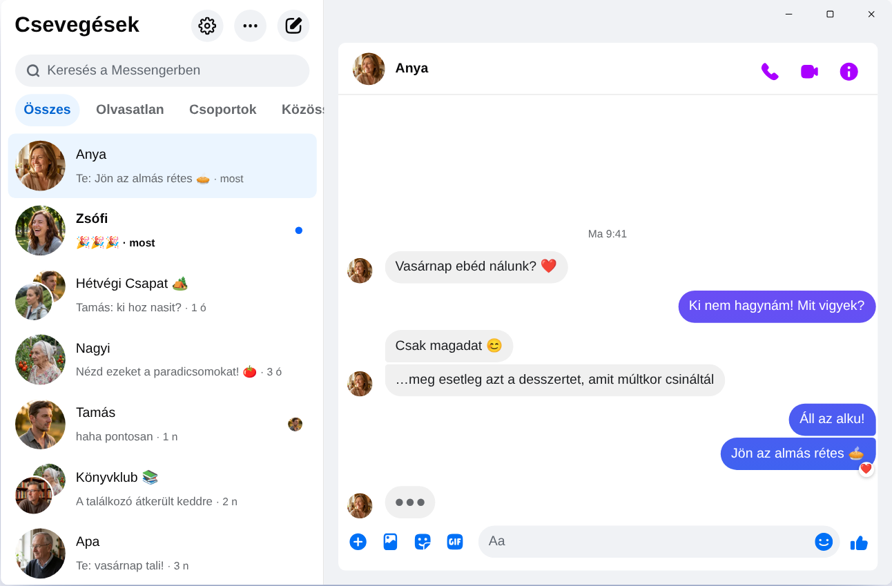

Chatpane / Windows
Frissítve: 2026. november
Így használhatod a Messengert a gépeden 2026-ban
A Meta 2025. december 15-én megszüntette a windowsos Messenger-alkalmazást, a messenger.com pedig már a Facebookra irányít át. Ez működik ma Windows 10-es vagy 11-es PC-n és laptopon.
Ingyenes és nyílt forráskódú · Windows 10 és 11 · Nem a Meta alkalmazása
Röviden
Hivatalos Messenger-alkalmazás számítógépre már nincs. A Meta eltávolította a Microsoft Store-ból, és 2026 áprilisa óta a Messenger számítógépen csak a facebook.com/messages oldalon működik, a Facebookon belül.
Ha a Messengert külön ablakban szeretnéd, hírfolyam és Reels nélkül, a Chatpane egy ingyenes, nyílt forráskódú Windows-alkalmazás, amely csak a beszélgetéseidet mutatja. Független projekt, nem a Meta terméke.
Vigyázz a letöltőoldalak „Messenger PC-re” telepítőivel
Sok régi útmutató még mindig azt írja, hogy keresd meg a „Messenger” alkalmazást a Microsoft Store-ban, vagy töltsd le a Messenger 2250.1 telepítőjét egy letöltőoldalról. Ezzel semmit sem nyersz: ez pontosan az az alkalmazás, amelyet a Meta 2025 decemberében megszüntetett, és megnyitva csak átküld a Facebookra.
A Facebook-jelszavadat se írd be olyan programba vagy oldalra, amelynek nem ismered az eredetét. Ha valaki saját bejelentkezőképernyővel kínál „Messengert PC-re”, légy óvatos.
Mi történt a windowsos Messengerrel?
2024-ben a Meta a windowsos alkalmazást egy becsomagolt webes változatra cserélte. 2025 októberében bejelentette a megszüntetését és levette a Microsoft Store-ból, 2025. december 15-én pedig az alkalmazás leállt. 2026 áprilisában a messenger.com is bezárt. A részleteket és a dátumokat a Megszűnt a Messenger a számítógépen? oldalon találod.
Lehetőségeid
Így használhatod a Messengert Windowson
A Chatpane Windowson
A Chatpane ugyanazt a Messengert nyitja meg, amit a böngészőben látsz, így minden beszélgetésed, csoportod, hívásod és fotód megvan, és szinkronban marad a telefonoddal. Csak a Facebook többi része tűnik el.
- Csak a Messenger. A Facebook hírfolyama, a Reels, a Marketplace és a keresés el van rejtve.
- Hasznos értesítések. Válaszolj, reagálj, jelöld olvasottnak vagy némítsd a beszélgetést az értesítésből, az ablak megnyitása nélkül. Így a családi és a baráti csoportok üzenetei sem sikkadnak el munka közben.
- Tálca és értesítési terület. Az olvasatlan üzenetek száma az ikonon, indítás a Windowszal együtt, és az ablak bezárása után tovább futhat az értesítési területen.
- Adatvédelem. Rejtsd el, hogy gépelsz, rejtsd el a neveket és a profilképeket képernyőmegosztáskor, és blokkold a Facebook analitikai kéréseit (alapból bekapcsolva).
- Magyarul. A Chatpane a számítógéped nyelvét használja, így a menüi és a beállításai magyarul jelennek meg.

Telepítés
- Töltsd le a Windows-telepítőt. Ha a gépedben ARM processzor van, az ARM64-es telepítőt válaszd.
- Indítsd el. A Chatpane Windows-telepítői még nincsenek digitálisan aláírva, ezért a SmartScreen kiírhatja, hogy „A Windows megvédte a számítógépét”. Kattints a „További információ” linkre, majd a „Futtatás mindenképp” gombra. A Chatpane-t csak a chatpane.app oldalról vagy a GitHubról töltsd le.
- Jelentkezz be a szokásos Facebook-fiókoddal. A beszélgetéseid azonnal megjelennek.
Nem szeretnél semmit telepíteni? A hordozható változat (.zip) telepítő nélkül is működik.
GYIK
Kérdések a Messengerről számítógépen
Ingyenes a Chatpane?
Igen. Nincs ára, előfizetése vagy reklámja. Nyílt forráskódú, MIT licenc alatt, és a forráskódja nyilvános a GitHubon, így bárki átnézheti.
Ez a hivatalos Messenger-alkalmazás?
Nem. A Chatpane független projekt, nincs kapcsolatban a Metával. A valódi Messengert mutatja a facebook.com/messages oldalról, saját ablakban, így az üzeneteid továbbra is a Messengeren keresztül mennek, és a Meta feltételei vonatkoznak rájuk.
Működik Facebook-fiók nélkül?
Nem. 2026 áprilisa óta a Meta csak a telefonos alkalmazásban engedi Facebook-fiók nélkül használni a Messengert. Számítógépen a Chatpane-hez és minden más megoldáshoz olyan fiók kell, amellyel be lehet lépni a facebook.com oldalra.
Működik Windows 10-en?
Igen, Windows 10-en és 11-en is. A Chatpane a Microsoft Edge WebView2-t használja, amely a Windows 11 része. Windows 10-en a telepítő letölti, ha hiányzik.
Lehet videohívást indítani?
Igen. Ez a teljes Messenger, így a hang- és videohívások saját ablakban nyílnak meg, ugyanúgy, mint a facebook.com oldalon.
Szerezd meg a Chatpane-t
Ingyenes és nyílt forráskódú. Másodpercek alatt letölthető - csak kb. 4 MB.
Elérhető még: hordozható .zip · ARM .exe · ARM .zip
Régebbi Intel Mac? Intel .dmg
A teljes lista ellenőrzőösszegekkel a
GitHubon
található - vagy brew install --cask kristofferR/tap/chatpane